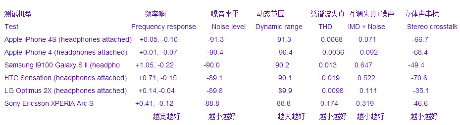

实践是检验真理的唯一标准 - 乱弹MP3、手机和录音笔等随身设备音质
音乐设备的评测唯一标准是盲听，唯二标准是听实况演出。
评测音质的基本原则是盲听，蒙上眼睛只用耳朵，在别人的帮助下不换耳机只换设备，盲听打分。设备和音源方面要注意以下几点：
1，同一曲目
2，同样大音量
3，关闭所有特效
4，有均衡器设置的，所有频段设置为零
5，尽量使用同一播放软件，比如天天动听
6，尽量使用FLAC或者APE等无损压缩格式的乐曲。MP3尽量使用320K的
7，使用同一个耳机或者喇叭
8，有连接线的（如耳机线音箱线），使用同一根线
最近试验了一小堆能听歌的设备，我突发奇想要对比测试一下谁的声音最好（直推耳机）。这些设备是：
1，台电T29（MP3）
2，台电T19HD（MP3）
3，闪迪sandisk的sansa clip+（MP3）
4，昂达VX330（MP3）
5，艾诺ainol火线四核novo9（平板电脑）
6，摩托罗拉XT882里程碑3手机
7，摩托罗拉ME525手机defy
8，苹果iphone4S手机
9，索尼SONY的D50（专业录音笔）
10，Zoom H1录音笔
11，LG 6200手机
12，IBM X40 笔记本电脑
13，东芝toshiba 超级本Satellite U800
14，诺基亚Nokia Pureview 808手机
15，三星galaxy camera（猎户座四核芯片）
16，智器SmartQ V5
17，华硕1215B上网本
试听耳塞是森海塞尔MX760，耳机是森海塞尔PX200。
试听曲目是德彪西《水的反光》，Reflects dans l'Eau，演奏者是Zoltan Kocsis。这首曲子从02:50开始（到03:20）有极强的连续低音，演奏者几乎要用左手去砸钢琴的低音部，右手同时快速的中高音音阶，听起来非常过瘾，也考验耳机和设备，比如低音的力度，高音的通透，以及整体的分离度。
一般来说音乐设备的评测要包括两个方面。第一个方面是技术数据，包括谐波失真，通道分离度等等。这些大家可以去网上搜，比如下面是一些手机的对比表：

这个数据的原文链接在这：http://www.gsmarena.com/index.php3%253FsRedir=www.gsmarena.com/lg_optimus_2x-review-564p8.php
但我对这些数据不是很感兴趣，很多时候，数据很漂亮的设备也可能不好听。但是，数据很差的设备也要引起你的重视，它至少可以做点参考。
一般来说有独立声卡的电脑音质较好。同理，有独立音频解码芯片的手机音质较好。但话也不能说死了，淘宝上几块钱一个的MP3，也都是独立解码的，你相信它们音质好？所以，唯一方法还是实际试听。
安卓手机因为天生的缺陷，也就是音频架构设计造成的SRC问题，理论上不可能有好的音质，比如上面的LG6200，音质就是一个渣。为了解决SRC问题，最近发布的步步高vivo
Xplay安卓手机采用了独立的音频解码芯片和运放芯片，绕过安卓系统自身的音频，我觉得这才是安卓手机音质的最终解决方案。
但是，采用德州仪器处理器的摩托罗拉DEFY以及里程碑3音质让我大跌眼镜。这两手机都没有独立音频解码芯片，应该是通过CPU软件解码的。难道德仪CPU的手机都有好音质？高通CPU的都是渣？
同样让我吃惊的还有艾诺ainol火线四核novo9，这可不是德仪的处理器啊，是国产全志A31廉价四核方案，应该没有独立音频芯片，为啥也有这么好的音质？
苹果iphone4S也表现非常好，我觉得胜过以上设备.
这不奇怪，爱疯4S有独立音频芯片（相当于电脑的独立声卡），型号是凌云逻辑公司生产的Cirrus Logic
338s0987，淘宝全新零售价每片25元人民币。
最让我吃惊的是2006年生产的台电T29，这个古董MP3的音质依然惊人。
我现在没有做到盲听，如果要盲听，我需戴好耳机，然后需要一位助手把我的眼睛蒙起来，只告诉我是几号设备放的，我逐一打分。
今天索尼D50不在手边。据说iphone5的音质比4S更好一点(参见链接: 深度解析 iPhone5音质评测报告: http://www.hifidiy.net/20-9829-1.html)，但我手边也没。所以，我就不公布答案了，等下次这些设备都在手边再写。
不是盲听的音质测评，本人一律鉴定为耍流氓，水军为主。拿钱发帖死全家。
有人说音乐设备评测是唯心的，永远也不可能有标准评测。well，有一定道理。到底要以什么为准？只有听实况
来对比，没有别的办法。一堆电子器材，听一万次也不知道斯坦威三角钢琴的音色到底如何。非得去听实况，最好是同一曲目，回来再对比此次演奏会的唱片。但并不是所有的钢琴演奏会都会录制成唱片，一流大师的演奏会才行。。。当然，你也可以用手机或者录音笔自己录。。。。
一次钢琴独奏音乐会通过重播设备再次传进你的耳朵，期间牵涉到很多问题：用何种麦克风，麦克风的摆位，何种录音机，哪位录音师，何种剪辑和后期均衡（加味精）方法，唱片压制，唱片转MP3，复制到手机里，然后再听。。。这些都要写出来，我还要研究十年看行不。。。
在我搜集的唱片里，Belafonte at Carnegie
Hall贝拉方提在卡内基大厅live版是绝对的天碟，演唱和录音都是地球最高水准。此唱片1959年4月19日录音于卡内基音乐厅。尤其最后那首长达11:27的Matilda，歌手和观众席各人群的互动联唱，现场感极其惊人。。简直如同坐在卡内基音乐厅的舞台上。。深夜聆听50多年前的老声音，感动莫名。1959年的录音，这是一堆古董胆机和麦克风的作品，当代最好的数码录音设备能录出这种效果吗？
我总是在幻想一次完美的音乐体验，我在卡内基音乐厅正好坐在皇帝位（最贵的票），这次音乐会也像Belafonte at Carnegie
Hall这次演出一样被录下来了，而且录音水平绝佳。每一年我都会找出唱片（最好是母带），用最好的设备来听，同时还可以回忆那个晚上本人在卡内基音乐厅的真实听感。。。我强烈向往着这样一次音乐体验。